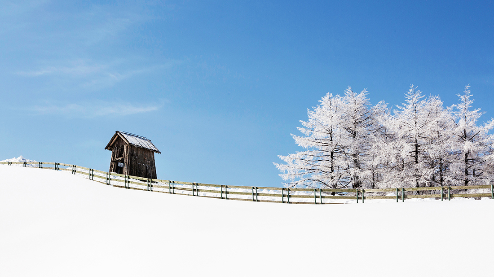

평창은 다른 지역들보다 여름이 시원하기로 유명하다. 무더운 여름, 도심에서 뿜어내는 답답하고 뜨거운 열기에서 벗어나 대관령을 향해 달리다 보면 어느새 새로운 풍경이 펼쳐질 것이다. 초록빛 잔디가 끝없이 펼쳐져 있고 그 앞으로 그림같이 펼쳐진 하늘 위에 솜사탕처럼 걸려있는 구름들까지, 지금 내 눈앞에 펼쳐진 것들이 그림인지 사진인지 정말 황홀한 느낌을 받을 수 있을 것이다.
답답했던 일상에서 벗어나 평소에 눈에 담기 힘들었던 푸른빛과 초록빛의 색들을 맘껏 눈에 담고 자연 속에서의 휴식을 선물받는듯한 기분이 든다. 하지만 풍경만 즐기는 것이 조금 지루한 사람들이 있다면 아직 실망하긴 이르다. “대관령 목장”에서 힌트를 얻을 수 있듯이 이곳에는 아름다운 풍경만이 존재하는 것은 아니다.
사실 대관령 목장의 가장 큰 묘미는 바로 동물들을 가까이서 보고 직접 체험해볼 수 있다는 점이다. 그래서인지 목장은 오히려 어른들보다 아이들에게 인기 만점이다.
양떼목장, 하늘목장, 삼양목장, 순수 양떼목장 등 다양한 목장 있는데 각 목장마다 입장료나 제공하는 서비스가 조금 달라서 방문 전에 자신이 원하는 조건에 맞게 선택하여 목장을 방문하는 것을 추천한다. 목장에서는 양떼몰이, 동물 먹이주기 체험 등 동물들과 다양한 체험을 해 볼 수 있어서 아이들에게 체험학습으로 제격이기도 하다. 목장마다 이용할 수 있는 것들의 차이는 있지만 어느 목장을 가도 대관령의 광활하고 아름다운 풍경을 즐길 수 있는 것은 마찬가지이니 방문 전 꼼꼼히 차이점을 알아보고 가는 것을 추천한다.
여름의 대관령 목장의 풍경을 한 문장으로 표현하자면 “깨끗하고 평화로운 힐링의 시간”이라고 표현하고 싶다. 탁 트인 풍경을 바라보는 것, 맑은 공기를 마시는 것만으로도 답답했던 현실에서 멀리 벗어나 다른 시간, 다른 공간에 와있는 듯한 느낌이 든다. 파랑 초록의 청량한 색감들이 마음까지 깨끗해지는 느낌을 준다.
물론 예쁜 풍경 속에서의 인생 샷은 덤으로 건질 수 있다. 실제로 많은 커플들이 셀프 촬영 장소로 선택할 만큼 사진 스폿으로도 유명하다. 별다른 조명이나 꾸밈없이도 산과 하늘 그리고 자연광의 완벽한 조화로 자연스럽고 예쁜 사진들을 꼭 찍어가는 것을 추천한다.
이번엔 겨울 목장의 매력을 느껴볼 차례이다. 여름이 주는 느낌이 푸름과 시원함이었다면 겨울은 깨끗함과 고요함이라고 표현하고 싶다.
여름처럼 모든 것들이 살아있고 생기 있는 푸릇함은 아니지만 겨울은 겨울 만이 가지고 있는 향기와 분위기가 있다. 눈이 내린 후의 차가운 공기가 얼굴에 닿으며 숨을 들이마시면 진정한 겨울냄새를 느껴볼 수 있다. 하얗게 눈 덮인 설원과 그에 대조되는 파랗고 맑은 하늘은 눈을 싫어하는 어른들에게도 또 다른 로망을 선사해 줄 것이다.
눈이 내리면 아무도 밟지 않은 눈을 밟기 위해 일부러 눈이 쌓인 곳으로 걸어본 기억이 다들 한 번쯤은 있을 것이다. 요즘 도시에서는 눈을 보고 싶어도 안전을 위해 빠른 제설작업이 이루어지거나 지열로 인해 금방 녹아버리고 만다. 때문에 눈이 오는 그때가 아니면 눈을 보거나 만지기 쉽지 않은 때가 되었다. 밤새 눈이 오기를 기대했던 어린 시절의 설렘은 이제 찾아보기 힘들어진 것이다. 하지만 대관령에서는 아주 잠깐의 순간 선물처럼 하얀 눈을 선물 받을 수 있다.
세상이 하얗게 뒤덮인 풍경을 볼 수 있고 그곳을 내 발로 직접 걸으며 눈을 밟아볼 수 있으며, 손으로 눈을 만지고 뭉쳐볼 수도 있다. ‘뽀드득 뽀드득’ 눈 밟는 소리와 차가운 공기의 냄새를 맡으며 걷다 보면 설경이 눈에 들어온다. 차가운 공기가 얼굴에 닿고 그 공간에 서있는 것만으로도 행복한 기분을 느낄 수 있다. 또한 겨울 목장은 맘껏 뛰어놀기 힘든 요즘 아이들에게 가장 넓은 놀이터가 되어줄 것이다.
손으로 직접 눈을 뭉쳐 던져보기도 하고 눈 위에 그림을 그려보기도 하고 눈밭에서 맘껏 뛰고 뒹굴며 차가운 눈을 직접 느끼는 것만으로도 아이들에게 가장 좋은 기억을 선물해 주는 것이 아닐까 싶다.
눈을 보며 설레는 건 아이들뿐만이 아니다. 어른들 역시 잠시 걱정은 내려놓고 온전히 겨울을 즐기기 충분하다. 스키장의 인공 눈이 줄 수 없는 자연의 눈밭에서 가족, 친구와 함께 목장을 오르며 고요한 시간을 보내고, 오랜만에 눈을 밟으며 어린 시절 눈과 함께 즐거웠던 기억을 회상해보길 바란다. 또 자신의 어린 시절 기억을 지금의 아이들에게 선물 해주는 것은 또 다른 재미일 것이다.